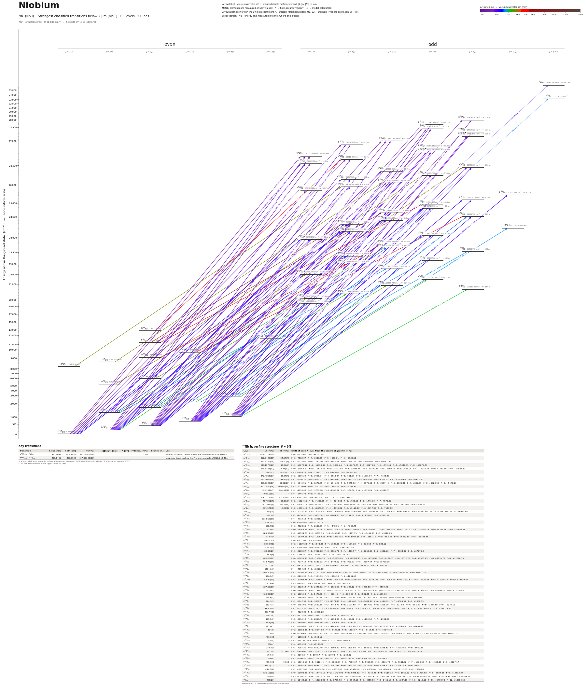

Niobium energy level diagram
Energy levels and transitions of neutral niobium (Nb I): the 90 strongest classified lines below 2 µm from the NIST Atomic Spectra Database and the 65 levels they connect, each line with its vacuum wavelength, frequency and, for 88 of them, the reduced dipole matrix element derived from the NIST transition rate. Measured lifetimes, transition rates, hyperfine constants and isotope shifts from the literature are included, each with its citation.
Hover a line or a level to isolate it, click to keep it selected. Scroll to zoom, drag to move.

Download: diagram (PDF) diagram (SVG) transitions (CSV) levels (CSV) source code

Key transitions of niobium
| Transition | λ vac (nm) | λ air (nm) | ν (THz) | |⟨J‖er‖J′⟩| (ea₀) | A (s⁻¹) | Γ/2π up. (MHz) | branch (%) | Use |
|---|---|---|---|---|---|---|---|---|
| a 4H13/2 – 4I°15/2 | 413.1091 | 412.9926 | 725.69801(10) | – | – | 8.511 | – | second proposed laser-cooling line from metastable a4H13/… |
| a 4H13/2 – z 4I°15/2 | 463.1405 | 463.0108 | 647.30348(10) | – | – | – | – | proposed laser-cooling line from metastable a4H13/2 at 46… |
λ, ν from NIST level energies unless a measured frequency for this isotope is available. A: measured value or NIST. Γ/2π: natural linewidth of the upper level, 1/(2πτ).
93Nb hyperfine structure (I = 9/2)
| Level | A (MHz) | B (MHz) | Shift of each F level from the centre of gravity (MHz) |
|---|---|---|---|
| a 6D1/2 | 1868.2184(18) | – | F=4: -5137.60 F=5: +4203.49 |
| a 6D3/2 | 852.5428(21) | -64.57(4) | F=3: -7063.07 F=4: -3609.85 F=5: +666.31 F=6: +5738.52 |
| a 6D5/2 | 719.4759(18) | -47.60(4) | F=2: -9914.61 F=3: -7741.90 F=4: -4850.51 F=5: -1245.20 F=6: +3068.09 F=7: +8082.20 |
| a 6D7/2 | 690.1978(16) | 20.48(8) | F=1: -13276.92 F=2: -11899.45 F=3: -9832.64 F=4: -7075.75 F=5: -3627.80 F=6: +512.41 F=7: +5346.35 F=8: +10875.73 |
| a 6D9/2 | 691.6141(22) | 132.75(12) | F=0: -17056.60 F=1: -16372.36 F=2: -15002.97 F=3: -12946.56 F=4: -10200.39 F=5: -6760.75 F=6: -2623.05 F=7: +2218.24 F=8: +7769.60 F=9: +14038.37 |
| a 4F3/2 | 644.2(5) | 32.80(13) | F=3: -5299.29 F=4: -2744.51 F=5: +469.45 F=6: +4356.28 |
| a 4F5/2 | 372.4853(17) | 33.34(4) | F=2: -5106.39 F=3: -3998.94 F=4: -2518.44 F=5: -661.57 F=6: +1575.84 F=7: +4198.80 |
| a 4F7/2 | 292.2022(16) | 44.93(5) | F=1: -5604.30 F=2: -5026.31 F=3: -4158.00 F=4: -2997.75 F=5: -1543.42 F=6: +207.65 F=7: +2258.68 F=8: +4613.42 |
| a 4F9/2 | 269.6320(26) | 64.31(13) | F=0: -6643.91 F=1: -6377.85 F=2: -5845.29 F=3: -5045.33 F=4: -3976.62 F=5: -2637.40 F=6: -1025.41 F=7: +862.01 F=8: +3028.00 F=9: +5476.13 |
| a 4P3/2 | 497.7569(16) | 59.902(14) | F=3: -4079.04 F=4: -2127.95 F=5: +348.36 F=6: +3374.84 |
| a 4P5/2 | 343.1670(5) | -80.454(9) | F=2: -4755.42 F=3: -3701.78 F=4: -2306.32 F=5: -577.08 F=6: +1475.89 F=7: +3840.51 |
| a 4D1/2 | 1997.0(11) | – | F=4: -5491.75 F=5: +4493.25 |
| a 4D3/2 | -143.322(22) | -10.76(18) | F=3: +1177.48 F=4: +611.36 F=5: -103.01 F=6: -970.12 |
| a 4D5/2 | -407.861(4) | 35.06(8) | F=2: +5624.15 F=3: +4390.05 F=4: +2748.68 F=5: +703.53 F=6: -1741.00 F=7: -4579.67 |
| a 4D7/2 | -477.037(4) | 126.90(8) | F=1: +9241.13 F=2: +8268.93 F=3: +6814.40 F=4: +4882.08 F=5: +2478.01 F=6: -390.26 F=7: -3713.66 F=8: -7481.61 |
| a 6S5/2 | -639.379(8) | -0.06(9) | F=2: +8791.43 F=3: +6873.31 F=4: +4315.81 F=5: +1118.93 F=6: -2717.35 F=7: -7193.02 |
| a 4H13/2 | 662(20) | – | F=2: -22342.50 F=3: -20356.50 F=4: -17708.50 F=5: -14398.50 F=6: -10426.50 F=7: -5792.50 F=8: -496.50 F=9: +5461.50 F=10: +12081.50 F=11: +19363.50 |
| b 4F5/2 | 338.500 | – | F=2: -4654.38 F=3: -3638.88 F=4: -2284.88 F=5: -592.38 F=6: +1438.62 F=7: +3808.12 |
| z 6D°1/2 | 1713.50(20) | – | F=4: -4712.12 F=5: +3855.38 |
| z 4D°1/2 | -794.7(5) | – | F=4: +2185.43 F=5: -1788.08 |
| z 4D°3/2 | 597.4(3) | – | F=3: -4928.55 F=4: -2538.95 F=5: +448.05 F=6: +4032.45 |
| z 6D°9/2 | 733.9(4) | – | F=0: -18164.03 F=1: -17430.12 F=2: -15962.33 F=3: -13760.62 F=4: -10825.02 F=5: -7155.52 F=6: -2752.12 F=7: +2385.18 F=8: +8256.38 F=9: +14861.48 |
| z 4D°5/2 | 809.80(10) | – | F=2: -11134.75 F=3: -8705.35 F=4: -5466.15 F=5: -1417.15 F=6: +3441.65 F=7: +9110.25 |
| z 4D°7/2 | 872.600 | – | F=1: -16797.55 F=2: -15052.35 F=3: -12434.55 F=4: -8944.15 F=5: -4581.15 F=6: +654.45 F=7: +6762.65 F=8: +13743.45 |
| z 4P°1/2 | -268.0(20) | – | F=4: +737.00 F=5: -603.00 |
| z 4G°5/2 | -78.50(20) | – | F=2: +1079.38 F=3: +843.88 F=4: +529.88 F=5: +137.38 F=6: -333.62 F=7: -883.12 |
| z 4P°3/2 | -138.9(3) | – | F=3: +1145.92 F=4: +590.33 F=5: -104.17 F=6: -937.58 |
| z 4G°7/2 | 430.30(20) | – | F=1: -8283.27 F=2: -7422.68 F=3: -6131.77 F=4: -4410.57 F=5: -2259.07 F=6: +322.73 F=7: +3334.82 F=8: +6777.23 |
| z 4F°3/2 | -16.6(3) | – | F=3: +136.95 F=4: +70.55 F=5: -12.45 F=6: -112.05 |
| z 4G°9/2 | 632.60(10) | – | F=0: -15656.85 F=1: -15024.25 F=2: -13759.05 F=3: -11861.25 F=4: -9330.85 F=5: -6167.85 F=6: -2372.25 F=7: +2055.95 F=8: +7116.75 F=9: +12810.15 |
| z 4F°5/2 | 514.70(20) | – | F=2: -7077.12 F=3: -5533.02 F=4: -3474.22 F=5: -900.73 F=6: +2187.47 F=7: +5790.38 |
| z 4P°5/2 | 103.5(4) | – | F=2: -1423.12 F=3: -1112.62 F=4: -698.62 F=5: -181.12 F=6: +439.88 F=7: +1164.38 |
| y 6F°1/2 | 1474.3(6) | – | F=4: -4054.32 F=5: +3317.18 |
| z 4F°7/2 | 592.20(10) | – | F=1: -11399.85 F=2: -10215.45 F=3: -8438.85 F=4: -6070.05 F=5: -3109.05 F=6: +444.15 F=7: +4589.55 F=8: +9327.15 |
| y 6F°3/2 | 266.9(5) | – | F=3: -2201.93 F=4: -1134.33 F=5: +200.18 F=6: +1801.58 |
| z 4G°11/2 | 752.30(10) | – | F=1: -22004.78 F=2: -20500.17 F=3: -18243.28 F=4: -15234.08 F=5: -11472.58 F=6: -6958.77 F=7: -1692.67 F=8: +4325.73 F=9: +11096.42 F=10: +18619.42 |
| z 6P°3/2 | 90.9(4) | – | F=3: -749.92 F=4: -386.32 F=5: +68.17 F=6: +613.58 |
| y 6F°5/2 | 227.50(10) | – | F=2: -3128.12 F=3: -2445.62 F=4: -1535.62 F=5: -398.12 F=6: +966.88 F=7: +2559.38 |
| z 4F°9/2 | 593.8(5) | – | F=0: -14696.55 F=1: -14102.75 F=2: -12915.15 F=3: -11133.75 F=4: -8758.55 F=5: -5789.55 F=6: -2226.75 F=7: +1929.85 F=8: +6680.25 F=9: +12024.45 |
| z 6P°5/2 | 136.80(20) | – | F=2: -1881.00 F=3: -1470.60 F=4: -923.40 F=5: -239.40 F=6: +581.40 F=7: +1539.00 |
| y 6F°7/2 | 138.6(3) | – | F=1: -2668.05 F=2: -2390.85 F=3: -1975.05 F=4: -1420.65 F=5: -727.65 F=6: +103.95 F=7: +1074.15 F=8: +2182.95 |
| z 6P°7/2 | 194.7(3) | – | F=1: -3747.97 F=2: -3358.57 F=3: -2774.47 F=4: -1995.67 F=5: -1022.17 F=6: +146.03 F=7: +1508.92 F=8: +3066.53 |
| y 6F°9/2 | 112.4(4) | – | F=0: -2781.90 F=1: -2669.50 F=2: -2444.70 F=3: -2107.50 F=4: -1657.90 F=5: -1095.90 F=6: -421.50 F=7: +365.30 F=8: +1264.50 F=9: +2276.10 |
| y 6F°11/2 | 44.90(10) | – | F=1: -1313.33 F=2: -1223.53 F=3: -1088.83 F=4: -909.23 F=5: -684.73 F=6: -415.32 F=7: -101.03 F=8: +258.18 F=9: +662.27 F=10: +1111.28 |
| y 6D°1/2 | 1537.900 | – | F=4: -4229.23 F=5: +3460.28 |
| y 4F°3/2 | 559.7(4) | – | F=3: -4617.52 F=4: -2378.72 F=5: +419.77 F=6: +3777.97 |
| y 4F°5/2 | 265.9(9) | – | F=2: -3656.12 F=3: -2858.43 F=4: -1794.83 F=5: -465.32 F=6: +1130.08 F=7: +2991.38 |
| y 6D°3/2 | 933(13) | – | F=3: -7698.90 F=4: -3966.10 F=5: +699.90 F=6: +6299.10 |
| y 4F°7/2 | 297.6(7) | – | F=1: -5728.80 F=2: -5133.60 F=3: -4240.80 F=4: -3050.40 F=5: -1562.40 F=6: +223.20 F=7: +2306.40 F=8: +4687.20 |
| y 6D°5/2 | 804(6) | – | F=2: -11056.38 F=3: -8644.08 F=4: -5427.68 F=5: -1407.17 F=6: +3417.43 F=7: +9046.12 |
| y 4F°9/2 | 337.4(8) | – | F=0: -8350.65 F=1: -8013.25 F=2: -7338.45 F=3: -6326.25 F=4: -4976.65 F=5: -3289.65 F=6: -1265.25 F=7: +1096.55 F=8: +3795.75 F=9: +6832.35 |
| x 6D°1/2 | 430.300 | – | F=4: -1183.33 F=5: +968.17 |
| x 6D°3/2 | 104(5) | – | F=3: -854.70 F=4: -440.30 F=5: +77.70 F=6: +699.30 |
| y 4D°1/2 | 506(4) | – | F=4: -1391.50 F=5: +1138.50 |
| y 6D°7/2 | 378.400 | – | F=1: -7284.20 F=2: -6527.40 F=3: -5392.20 F=4: -3878.60 F=5: -1986.60 F=6: +283.80 F=7: +2932.60 F=8: +5959.80 |
| z 2G°7/2 | 181.300 | -21.000 | F=1: -3499.65 F=2: -3134.05 F=3: -2586.28 F=4: -1857.08 F=5: -947.45 F=6: +141.35 F=7: +1407.83 F=8: +2850.22 |
| y 4D°3/2 | 39.9(6) | – | F=3: -329.18 F=4: -169.57 F=5: +29.93 F=6: +269.32 |
| x 6D°5/2 | 196(4) | – | F=2: -2700.50 F=3: -2111.30 F=4: -1325.70 F=5: -343.70 F=6: +834.70 F=7: +2209.50 |
| y 6D°9/2 | 405.700 | 47.000 | F=0: -10019.53 F=1: -9616.44 F=2: -8809.94 F=3: -7599.37 F=4: -5983.75 F=5: -3961.78 F=6: -1531.82 F=7: +1308.08 F=8: +4560.21 F=9: +8227.17 |
| x 6D°7/2 | 384.7(22) | – | F=1: -7405.48 F=2: -6636.07 F=3: -5481.98 F=4: -3943.18 F=5: -2019.67 F=6: +288.52 F=7: +2981.43 F=8: +6059.02 |
| y 4D°7/2 | -144.0(4) | – | F=1: +2772.00 F=2: +2484.00 F=3: +2052.00 F=4: +1476.00 F=5: +756.00 F=6: -108.00 F=7: -1116.00 F=8: -2268.00 |
| x 6D°9/2 | 525.10(10) | – | F=0: -12996.23 F=1: -12471.12 F=2: -11420.92 F=3: -9845.62 F=4: -7745.23 F=5: -5119.73 F=6: -1969.12 F=7: +1706.58 F=8: +5907.38 F=9: +10633.27 |
| z 4I°15/2 | 627(20) | – | F=3: -23986.58 F=4: -21478.17 F=5: -18342.67 F=6: -14580.08 F=7: -10190.38 F=8: -5173.57 F=9: +470.32 F=10: +6741.32 F=11: +13639.42 F=12: +21164.62 |
| 4I°15/2 | 299(20) | – | F=3: -11429.10 F=4: -10233.90 F=5: -8739.90 F=6: -6947.10 F=7: -4855.50 F=8: -2465.10 F=9: +224.10 F=10: +3212.10 F=11: +6498.90 F=12: +10084.50 |
Measured A, B constants; sources in the data file.
Closed and nearly closed transitions of niobium
| Transition | λ vacuum (nm) | Lower level | A (s⁻¹) | Leak per scattered photon | Photons before a leak | Where the leak goes |
|---|---|---|---|---|---|---|
| a 4H13/2 → 4I°15/2 | 413.1091 | metastable | – | closed | – | no other level can be reached by electric-dipole decay |
| a 4H13/2 → z 4I°15/2 | 463.1405 | metastable | – | closed | – | no other level can be reached by electric-dipole decay |
A transition is closed when its upper level can decay only to the level it was excited from, so the atom keeps scattering photons. “closed”: among the levels NIST lists, no other level below the upper level has the opposite parity and |ΔJ| ≤ 1, so no other electric-dipole decay exists. Otherwise the leak is the sum of the branching ratios of the other decay lines of the upper level (or 1 − branching ratio where that of the line itself has been measured), and the number of photons is 1 / leak. “≥” and “≤”: at least one possible decay path has no listed rate, so the leak is a lower limit. These numbers are derived from the branching ratios, lifetimes and rates of this page, not measured as such; the tag names the weakest of the inputs, * marks theory and ≈ a model calculation. Listed: lines that start on the ground level or on a metastable level and leak at most 10 %, unless more than three possible decay paths have no listed rate. Fine-structure levels only: hyperfine and Zeeman dark states and forbidden decays without a listed rate are not considered. Select a line in the diagram for the full list of its leak channels.
Listed Nb transitions below 2 µm
Reduced dipole matrix elements follow the convention A = ω³|d|²/(3πε₀ħc³(2J′+1)), with J′ the upper level. Tags show where a number comes from: measured, NIST compilation, high-accuracy theory, or a model calculation.
Nb energy levels
Nb⁺ ionisation limit 54513.80 cm⁻¹ = 6.75885 eV (183.440 nm)
Sources
- Başar, Başar, Öztürk, Er, Güzelçimen, Kröger, Astron. Astrophys. 556, A103 (2013), as com…
- Bouzed, Kröger, Zimmermann, Kronfeldt, Guthöhrlein, Eur. Phys. J. D 23, 57 (2003), as com…
- Büttgenbach, Dicke, Gebauer, Herschel, Meisel, Z. Phys. A 275, 193 (1975) (atomic-beam ma…
- Duquette & Lawler, Phys. Rev. A 26, 330 (1982), as compiled in R. L. Kurucz life4100.lab
- Duquette, Den Hartog, Lawler, JQSRT 35, 281 (1986), as compiled in R. L. Kurucz gf4100ddl…
- Eustice, Cassella, Stamper-Kurn, Phys. Rev. A 102, 053327 (2020). Note: derived, approxim…
- Fraenkel, Bengtsson, Hanstorp, Nyberg, Persson, Z. Phys. D 8, 171 (1988) (laser-rf double…
- Gao, Geng, Quinet, Wang, Yu, Dai, Astrophys. J. Suppl. 242, 23 (2019), Table 1
- Kröger, Er, Öztürk, Başar, Jarmola, Ferber, Tamanis, Začs, Astron. Astrophys. 516, A70 (2…
- Kröger, Er, Öztürk, Başar, Jarmola, Ferber, Tamanis, Začs, Astron. Astrophys. 516, A70 (2…
- Kröger, Eur. Phys. J. D 41, 55 (2007) (laser-induced fluorescence), as tabulated in Kröge…
- Kröger, Eur. Phys. J. D 41, 55 (2007), as compiled in R. L. Kurucz ab410093.dat
- Mukund, Bhattacharyya, Yarlagadda, Nakhate, JQSRT 166, 68 (2015), as compiled in R. L. Ku…
- NIST ASD level energies
- Rudolph & Helbig, Phys. Lett. 89A, 339 (1982), as compiled in R. L. Kurucz life4100.lab
Transitions: classified Nb I lines with log gf of Duquette, Den Hartog & Lawler 1986 as transcribed by Kurucz (gf4100ddl.lab; lower/upper energies and J matched to the NIST levels file within 0.06 cm^-1); A_s is derived from log gf with A = 0.667025 sigma^2 gf / g_upper (sigma from NIST energies). Where the line is in Table 1 of Kröger et al. 2010 the measured hyperfine centre-of-gravity wavenumber is given as frequency_THz (isotope 93, the only stable one). Level lifetimes: Gao et al. 2019 (first-hand) preferred, older measurements under alternatives. Hyperfine: even levels from Table 2 of Kröger et al. 2010 (literature compilation with uncertainties) plus Kurucz ab410093.dat for levels missing there; odd levels from Table 3 of Kröger et al. 2010 (A only). The Kurucz hyperfine file has transcription errors (three found against Kröger 2010, listed under conflicts) and omits uncertainties, so its entries should be treated with care; entries flagged COMPUTED in that file (code KOAB) were skipped. Sign convention: A, B in MHz as printed. Lines without frequency_THz: 188.
Atoms with measured data
- Lithium-632 levels, 85 lines
- Lithium-732 levels, 85 lines
- Beryllium-917 levels, 26 lines
- Sodium-2336 levels, 106 lines
- Magnesium-2418 levels, 61 lines
- Magnesium-2518 levels, 61 lines
- Potassium-3934 levels, 84 lines
- Potassium-4034 levels, 84 lines
- Potassium-4134 levels, 84 lines
- Calcium-4035 levels, 61 lines
- Calcium-4335 levels, 61 lines
- Chromium-5256 levels, 87 lines
- Chromium-5356 levels, 87 lines
- Rubidium-8536 levels, 94 lines
- Rubidium-8736 levels, 94 lines
- Strontium-8440 levels, 70 lines
- Strontium-8640 levels, 70 lines
- Strontium-8740 levels, 70 lines
- Strontium-8840 levels, 70 lines
- Cadmium-11115 levels, 21 lines
- Cadmium-11315 levels, 21 lines
- Cadmium-11415 levels, 21 lines
- Caesium-13331 levels, 79 lines
- Barium-13744 levels, 89 lines
- Barium-13844 levels, 89 lines
- Dysprosium-16139 levels, 55 lines
- Dysprosium-16239 levels, 55 lines
- Dysprosium-16339 levels, 55 lines
- Dysprosium-16439 levels, 55 lines
- Erbium-16673 levels, 90 lines
- Erbium-16773 levels, 90 lines
- Erbium-16873 levels, 90 lines
- Thulium-16972 levels, 73 lines
- Ytterbium-17118 levels, 26 lines
- Ytterbium-17318 levels, 26 lines
- Ytterbium-17418 levels, 26 lines
- Mercury-19927 levels, 47 lines
- Mercury-20127 levels, 47 lines
- Mercury-20227 levels, 47 lines